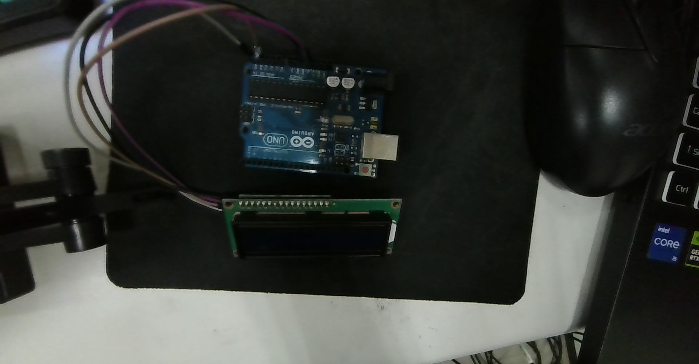

依據實拍照解構 Arduino Uno 與 LCD 1602 (PCF8574 背板) 實體 4-Pin 接線、IDE 2.x 開發環境操作、I2C 位址自動偵測與常見硬體天坑除錯指南
下圖為您目前桌面上實際接線的硬體配置（Arduino Uno + I2C LCD 1602 模組）：

| I2C 轉接板引腳 | 訊號意義 | Arduino Uno 對應腳位 | 配線重點與說明 |
|---|---|---|---|
| GND | 系統接地 (0V) | GND (POWER 排針) | 黑色/棕色導線，連接電源排針任一 GND 孔 |
| VCC | 工作電源 (+5V) | 5V (POWER 排針) | 紅色/紫色導線，務必接 5V（若誤接 3.3V 液晶對比度會嚴重不足） |
| SDA | 串列資料線 (Serial Data) | 類比 Pin A4 | 雙向資料通訊（亦可接數位排針 AREF 旁邊標示的專屬 SDA 孔） |
| SCL | 串列時脈線 (Serial Clock) | 類比 Pin A5 | 同步時脈傳輸（亦可接數位排針 AREF 旁邊標示的專屬 SCL 孔） |
PC4 (A4) 與 PC5 (A5)。數位排針右上角的專屬 SDA/SCL 腳位，在 PCB 底層走線上是直接與 A4、A5 貫通的，兩者接哪一個效果完全相同！
Arduino IDE 是撰寫、編譯並將程式碼燒錄至單晶片的官方整合開發環境。以下為新手上機的 4 大關鍵步驟：
將 USB 線插入電腦後，在頂部下拉選單選擇 "Arduino Uno"。
選取標有 (Arduino Uno) 的通訊埠（如 COM3、COM4）。切勿選擇主機板內建的 COM1。
按下 Ctrl+Shift+I 開啟 Library Manager，搜尋並安裝 LiquidCrystal I2C (by Frank de Brabander)。
按 Ctrl+R 驗證語法，按 Ctrl+U 燒錄進板子；按 Ctrl+Shift+M 打開序列埠監視器除錯。
在嵌入式軟體開發中有一條黃金準則：「不要重新發明輪子 (Don't reinvent the wheel)」。Arduino 程式庫正是讓全球創客與工程師能在短時間內完成強大專案的靈魂核心！
若沒有 LiquidCrystal_I2C 庫，要讓螢幕顯示字元，你必須手寫 TWI/I2C 初始化、手動拆解 8-bit 字元為 4-bit 脈衝切換，寫 300~500 行底層代碼；有了程式庫，只需 lcd.print("Hello") 一行搞定！
將專屬硬體的驅動與演算法封裝成獨立庫，任何新專案只需透過 #include <xxx.h> 就能立即復用，大幅提升軟體架構的整潔度與維護性。
優質程式庫具備硬體抽象層（HAL）。相同的 LCD 程式碼，不論在 8 位元的 Arduino Uno、Mega，或 32 位元的 ESP32、RP2040 上，呼叫方式完全一致！
全球數十萬開發者無私貢獻與維護。從溫濕度感測器 (DHT22)、陀螺儀 (MPU6050) 到藍牙/WiFi 模組，市面上 99% 的電子零件都能在 1 分鐘內搜尋並安裝對應庫。
| 檔案 / 資料夾 | 功能職責 | 白話比喻 |
|---|---|---|
xxx.h (標頭檔) |
宣告有哪些類別 (Class)、函式原型與常數 | 就像餐廳的「點菜菜單」，讓程式知道有什麼功能可點。 |
xxx.cpp (實作檔) |
編寫具體函式的 C++ 演算邏輯與底層暫存器操作 | 就像廚房「大廚做菜的烹飪流程」，具體實現功能細節。 |
keywords.txt |
設定專屬關鍵字著色規則 | 讓函式名稱在 Arduino IDE 編輯器中自動呈現橘色或藍色高亮。 |
examples/ (範例目錄) |
官方提供的標準測試與使用教學專案範例 | 學習必備！可在 IDE「檔案 ➔ 範例 ➔ [庫名稱]」直接打開運行。 |
| 安裝途徑 | 適用情境 | 操作步驟說明 |
|---|---|---|
| 途徑 A：IDE 程式庫管理員 (Library Manager，最推薦) |
官方收錄與熱門開源庫 (如 LiquidCrystal_I2C) |
按下快捷鍵 Ctrl + Shift + I ➔ 搜尋名稱 ➔ 點擊 INSTALL，IDE 自動下載並設定路徑。 |
| 途徑 B：匯入 .ZIP 壓縮檔 | GitHub 下載的第三方最新庫 | 選單點選：草稿碼 (Sketch) ➔ 匯入程式庫 (Include Library) ➔ 加入 .ZIP 程式庫... ➔ 選取下載的 zip 檔。 |
| 途徑 C：手動放置資料夾 | 團隊自製或特殊客製庫 | 解壓縮後複製整包資料夾貼至電腦的 文件/Arduino/libraries/ 目錄，重啟 IDE 即可。 |
fatal error: xxx.h: No such file or directory：代表該程式庫尚未安裝，或 #include <xxx.h> 檔名大小寫拼錯（C++ 嚴格區分大小寫）。'class xxx' has no member named 'yyy'：安裝到了不同作者編寫的同名庫（例如有些 LCD 庫初始化叫 lcd.begin()，有些叫 lcd.init()），建議參考該庫的 examples 官方範例確認函式命名。
很多時候程式碼完全正確且上傳成功，但實體 LCD 螢幕卻一片空白，請立刻依序檢查以下 3 個地方：
0x20 (十進制 32)。0x27；若晶片型號帶 A (PCF8574AT) 則為 0x3F！上傳以下程式碼，開啟序列埠監視器（9600 baud），它會自動列印出您這塊 LCD 轉接板的真實十六進制位址：
#include <Wire.h>
void setup() {
Wire.begin();
Serial.begin(9600);
while (!Serial); // 等待序列埠連線
Serial.println(F("\n================================="));
Serial.println(F("🔍 I2C 匯流排位址自動掃描開始..."));
Serial.println(F("================================="));
byte count = 0;
for (byte address = 1; address < 127; address++) {
Wire.beginTransmission(address);
byte error = Wire.endTransmission();
if (error == 0) {
Serial.print(F("✅ 找到 I2C 裝置！位址為: 0x"));
if (address < 16) Serial.print("0");
Serial.println(address, HEX);
count++;
} else if (error == 4) {
Serial.print(F("⚠️ 位址 0x"));
if (address < 16) Serial.print("0");
Serial.println(address, HEX);
Serial.println(F(" 發生不明錯誤"));
}
}
if (count == 0) {
Serial.println(F("❌ 未找到任何 I2C 裝置！請檢查 5V/GND/SDA/SCL 接線。"));
} else {
Serial.print(F("🎉 掃描完成！共找到 "));
Serial.print(count);
Serial.println(F(" 個裝置。"));
}
}
void loop() {}
i2c_lcd1602.ino)以下為今天在實體 Arduino Uno 與 LCD 1602 上機測試並驗證通過的完整原始碼（檔案位於 D:\Arduino\i2c_lcd1602\i2c_lcd1602.ino 與 ec/i2c_lcd1602.ino）：
//YWROBOT
//Compatible with the Arduino IDE 1.0
//Library version:1.1
#include <Wire.h>
#include <LiquidCrystal_I2C.h>
LiquidCrystal_I2C lcd(0x27, 16, 2); // 設定 LCD 位址為 0x27，16 字元 2 行
void setup()
{
lcd.init(); // 初始化 LCD
lcd.backlight(); // 開啟背光
// 讀取未接線的類比腳位 A0 作為隨機數種子，確保每次開機後的隨機序列不同
randomSeed(analogRead(A0));
}
void loop()
{
// --- 第一行：顯示隨機 10 個 ASCII 字元 ---
lcd.setCursor(0, 0); // 移至第 1 行開頭
for (int i = 0; i < 10; i++) {
// ASCII 可見字元範圍為 33 ('!') 到 126 ('~')
char randChar = (char)random(33, 127);
lcd.print(randChar);
}
lcd.print(" "); // 印出 6 個空格補滿 16 格，避免殘留多餘字元
// --- 第二行：顯示 hello ---
lcd.setCursor(0, 1); // 移至第 2 行開頭
lcd.print("hello "); // 印出 hello 並補齊空格
// --- 等待 2 秒 ---
delay(2000);
}
程式中的 LiquidCrystal_I2C lcd(0x27, 16, 2); 成功與桌面上的實體 PCF8574 背板握手通訊，證明該塊硬體的出廠位址確為 0x27。
透過讀取懸空未接線的類比腳位 A0，吸收環境電磁白雜訊作為 randomSeed() 種子，保證每次重新開機後的隨機字串序列皆完全不同！
若呼叫 lcd.clear() 會造成點陣重繪劇烈閃爍。本程式巧妙以 lcd.print(" ") 補滿 16 格直接覆寫舊字跡，畫面流暢穩定、毫無閃爍感！
D:\CLASS_NOTE\ec\2026-10-01-145140.jpg 實際硬體接線 製作一份arduino ide介紹與i2c接線的筆記變更摘要：依據實拍硬體照片（2026-10-01-145140.jpg）製作完整圖解手冊，解構 Uno 與 LCD 1602 實體 4-Pin 接線、IDE 2.x 介面與庫安裝、I2C 位址自動偵測器與背部藍色十字旋鈕對比度調整技巧。
加入arduino 程式庫的使用與重要性說明變更摘要：增補「Arduino 程式庫（Library）的使用方法與核心重要性」專章，解析不重造輪子原則、極致模組化、跨平台移植（HAL）、程式庫內部結構（.h, .cpp, keywords.txt, examples/）與三大安裝途徑。
D:\Arduino\i2c_lcd1602\i2c_lcd1602.ino 這是今天實際接線的測試程式 加入筆記變更摘要：納入今日實際上機驗證成功的測試程式 `i2c_lcd1602.ino`，解析確認出廠位址 0x27、利用懸空類比腳位 A0 雜訊生成亂數種子，以及採用「空格補滿法」取代 lcd.clear() 根除液晶閃爍。
依照規則應該在文件下方備註prompt 以及標頭資訊變更摘要：依據專案規範全面補齊文件標頭（最後更新時間、模型、Agent、關聯資源）與下方累加式 Prompt 歷史記錄。